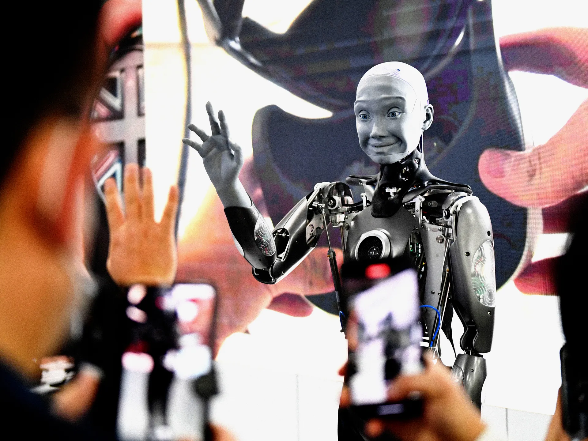

Get Ready for a ‘Tsunami’ of AI at CES
CES, which kicks off January 9 in Las Vegas, will feature the usual assortment of new consumer tech products. This year, even more of that stuff will be empowered by machine intelligence.
IF YOU'RE WAITING for the hubbub over generative AI to die down, maybe pull up a chair. The buzz around artificial intelligence shows no signs of quieting—a fact that will become all too obvious at this year’s CES.
CES, the consumer electronics industry’s largest annual gathering in the US, is returning to Las Vegas on January 9. It is a massive, four-day-long bustling bazaar of tech, with expo halls filled to the brim with new gadgets, hopeful startups, and prototypes that reach for the stars. CES is a trade show where sales and distribution deals are inked, where concept cars roll through crowded streets, and where tech journalists and showgoers alike wander the floors looking for the standout new products. And this year, many of the products debuting are going to be garnished with heaping globs of AI.
For years, generative AI technology bubbled beneath the surface of public consciousness. It finally burst into the limelight in November 2022, when OpenAI released the first iteration of ChaptGPT. The arrival of the shiny new chatbot kicked off an AI arms race. Since the reverberant waves of this eruption hadn't yet fully saturated the tech industry by the time last year's CES took place, there wasn't really a whole lot of GenAI talk in Las Vegas last January. As a result, CES 2023 looks almost primitive in hindsight, arriving a scant six weeks behind the greatest technological revolution since the mobile phone.
That won’t be the case in 2024. “We didn’t get the full CES fire hose of AI announcements last year like we’re going to have,” says Anshel Sag, a principal analyst at Moor Insights & Strategy. “If you thought it was a wave last year, it's going to be a tsunami this year.”
Expect to see AI everywhere at CES: in cars, scooters, headphones, cameras, speakers, and televisions. In some cases, these products will simply include another way to access a ChatGPT-style question-and-response service to handle spoken commands. But in other cases, the advances could feel more impactful. Companies like Intel, Qualcomm, and AMD are expected to announce chips that support AI services on the devices that carry them. These chips would process AI tasks locally, without having to send a request to a server in the cloud and then wait for a response, making things like computer vision, voice-to-text services, and generative computing feel snappier.
Gary Shapiro, CEO of the Consumer Technology Association, the group that puts on CES, says that while artificial intelligence capabilities may be heralded this year, the tech will eventually fade into the background as it becomes commonplace.
“AI is almost like the internet; it’s a huge ingredient that’s not going away,” Shapiro says. “Companies don’t go to CES and say, ‘Here’s the internet.’ It’ll be interesting to see how they implement generative AI.”
While computer chips that imitate human interactions may be the big stars of CES, AI is far from the only trend to watch for at the event.
The automotive industry won’t steal as much of the focus as it did in recent years, but companies like Honda have teased plans to reveal new electric vehicles at CES. Health tech will also be emphasized more heavily, and beauty tech featured at the forefront for the first time in CES history, with a keynote address from the French personal care company L'Oréal. Sag also says to expect a renewed vigor around extended reality tech, as companies aim to either prepare for Apple’s Vision Pro headset or compete with it.
If you’re going this year, you can expect CES to be as crowded and noisy as ever, with every company exhibiting there hoping to get some attention (and revenue) from their tech announcements—even if all they’re doing is putting a new chip in an already familiar device to make it a little chattier, and a little more human.